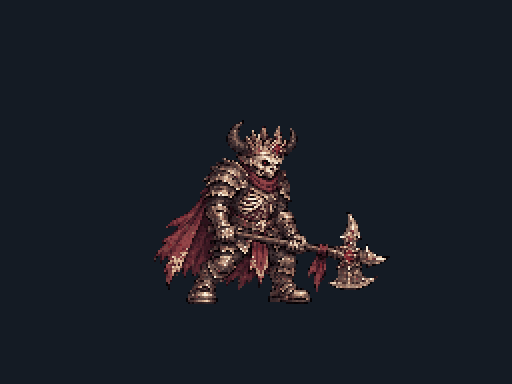
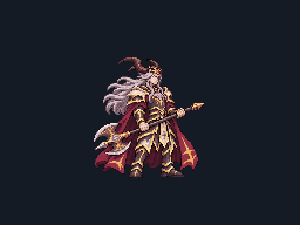
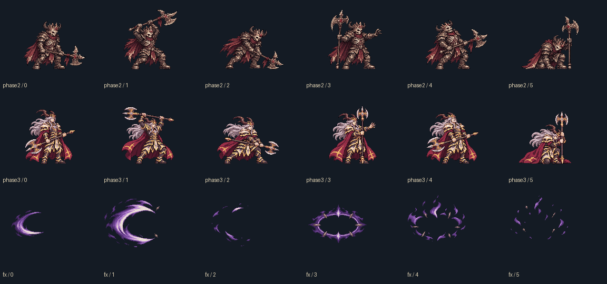
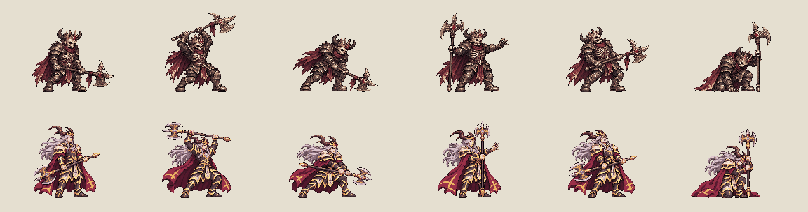

2형은 작은 뿔과 노출 갈비뼈의 해골왕, 현재 부활 3형은 장발·인간 얼굴·검정 금색 갑옷의 왕입니다. 각6자세와 별도 FX6개를 한 가족으로 묶었습니다. 검토 전용이며 게임에는 반영하지 않았습니다.


GIF의110ms 간격·FX 위치는 조합 확인용입니다. 실제 공격 판정·예고 범위·피격 경직·페이즈 전환 시간과 다릅니다. 몸체 PNG에는 오라·베기 이펙트를 넣지 않았습니다.


2배 확대 · 규격·현재 코드·연결 계획 · 좌표·출처 · 18장 정적 보고서
중간 프레임·전방향·보행은 포함하지 않았습니다. 손·무기 체적, 두 형의 크기 변화, 효과가 전투 예고를 가리지 않는지는 실제 게임에서 추가 검증해야 합니다.